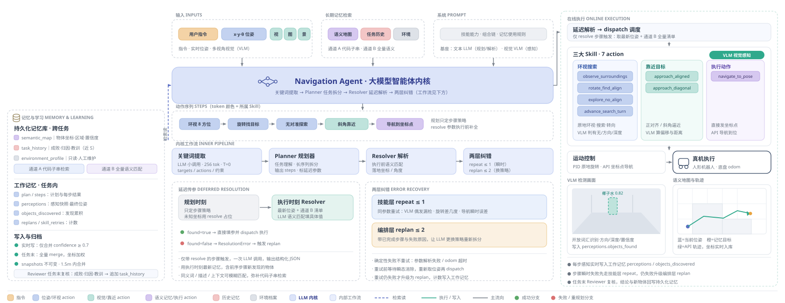

图 1 导航智能体系统总体架构。
规划层完成关键词提取、纯代码记忆检索与 Planner 任务拆分；执行层对延迟步骤由 Resolver 现场落地参数，
调度三大 Skill 的 7 个 action，skill 内由 VLM 视觉感知、运动层区分 PID 原地旋转与 API 坐标导航；
技能层 repeat 与编排层 replan 构成两层纠错；记忆层含三个持久化 JSON、任务内工作记忆与不可变快照，
通道 A 为代码子串读、通道 B 为全量位置清单语义读，写入分实时高置信合并与任务末全量合并。
矢量母版：architecture_main.svg（可在 Illustrator / Figma / Inkscape 编辑，无损导出 PDF / 300dpi PNG）。